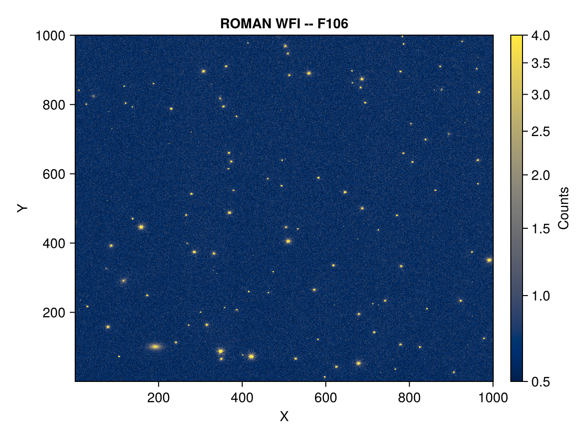

Roman
Adapted from STScI Roman Notebooks.
In this example, we show how to use ASDF.jl to load and view some simulated astronomical data created in preparation for the future (Nancy Grace Roman Space Telescope) mission.
Simulated data products are currently provided by STScI via AWS S3 buckets. Note: The data product used for this example is a moderately large file (~300 MB).
Load
using ASDF, AWS, AWSS3
fpath = let
filename = joinpath(mkpath(pkgdir(ASDF, "data")), "roman.asdf")
path = "roman/nexus/soc_simulations/tutorial_data/r0003201001001001004_0001_wfi01_f106_cal.asdf"
aws_config = AWS.AWSConfig(; creds = nothing, region = "us-east-1")
isfile(filename) || s3_get_file(aws_config, "stpubdata", path, filename)
filename
end
af = load(fpath; extensions = true, validate_checksum = false)roman.asdf
├─ asdf_library::TaggedMapping
│ ├─ author::String | The ASDF Developers
│ ├─ homepage::String | http://github.com/asdf-format/asdf
│ ├─ name::String | asdf
│ └─ version::String | 4.1.0
├─ history::OrderedDict
│ └─ extensions::Vector{TaggedMapping} | shape = (7,)
└─ roman::TaggedMapping
├─ meta::OrderedDict
│ ├─ asn::OrderedDict
│ ├─ cal_logs::TaggedSequence | shape = (817,)
│ ├─ cal_step::TaggedMapping
│ │ ├─ dq_init::String | COMPLETE
│ │ ├─ saturation::String | COMPLETE
│ │ ├─ refpix::String | COMPLETE
│ │ ├─ linearity::String | COMPLETE
│ │ ├─ dark::String | COMPLETE
│ │ ├─ ramp_fit::String | COMPLETE
│ │ ├─ assign_wcs::String | COMPLETE
⋮ (199) more rows
Some ASDF files produced by the Python implementation of ASDF may save a checksum in its header block computed from the original decompressed file. This will cause ASDF.jl to fail because in constrast, it computes the checksum based on the compressed (i.e., "used data"), as per the current specification for ASDF. To handle this potenial failure mode, we pass validate_checksum = false to avoid running the default checksum.
Plot
using CairoMakie
img_sci = let
img = af["roman"]["data"][]
@view img[begin:1000, begin:1000]
end
telescope = af["roman"]["meta"]["telescope"]
instr = af["roman"]["meta"]["instrument"]["name"]
filt = af["roman"]["meta"]["instrument"]["optical_element"]
fig, ax, hm = heatmap(img_sci;
axis = (;
xlabel = "X",
ylabel = "Y",
title = "$(telescope) $(instr) -- $(filt)",
),
colorrange = (0.5, 4),
colorscale = asinh,
colormap = :cividis,
)
Colorbar(fig[1, 2], hm; label = "Counts")
fig
By default, Makie.jl places the origin in the lower left corner and transposes the data, matching the convention used in the Python workshop example. To have the plot orientation match the data orientation instead, modify the above plot command to: heatmap(img_sci'; axis = (; yreversed = true)). See also permutedims for a more general alternative to the adjoint (conjugate transpose) operation: '.